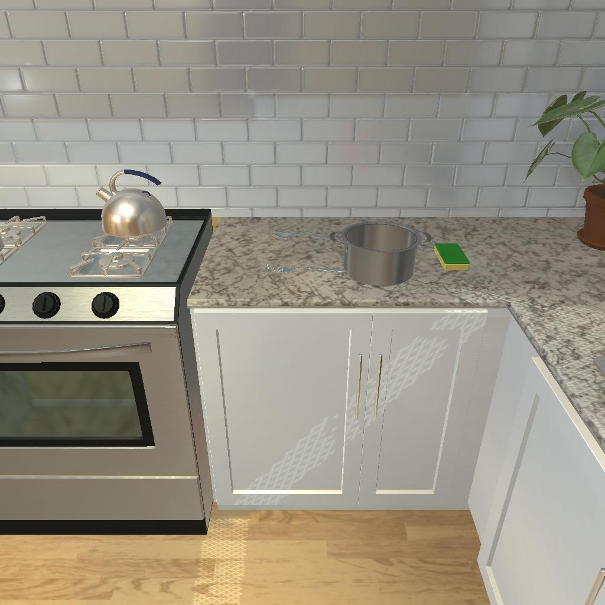

---------------------------------------------------------task: 16---------------------------------------------------------
--------------------------------------------------------------------------------------------------------------------------------------------------------------------
--------------------------------------------------------------------------------------------------------------------------------------------------------------------
Step:--------------------------------------------------------------------------6-------------------------------------------------------------------------------
----------------------------------------
VLM Prompt:
**Task**
Please perform as an embodied AI agent. Our final objective is to put a cool pan in sinkbasin. Below is the plan for completing the task, the current observation, alongside historical data and admissible actions for the next step. Please determine the best action for the next step!
**Plan**
Below is a detailed step-by-step plan to complete the task.
1. Find a pan.
2. Pick up the pan.
3. Find a fridge.
4. Cool the pan with the fridge.
5. Find a sink basin.
6. Place the cooled pan in the sink basin.
**Current Observation**
Displayed is an image capturing the current position of the agent.
**History Information**
Displayed are the previous observations with their corresponding actions.
State 0:
No history.
State 1:
1. Step Index in the Plan: 1
2. Objects: Sink Basin, Faucet, Countertop
3. Action: go to cabinet 1
State 2:
1. Step Index in the Plan: 2
2. Objects: Pans, Stove
3. Action: go to stoveburner 1
State 3:
1. Step Index in the Plan: 3
2. Objects: Kettle, Stove Burner, Pot, Countertop, Sink Basin
3. Action: go to fridge 1
State 4:
Step Index in the Plan: 3
Objects: Fridge (with "Frost Aid" text)
Action: open fridge 1
State 5:
1. Step Index in the Plan: 4
2. Objects: Fridge, Fridge Shelves
3. Action: close fridge 1
State 6:
1. Step Index in the Plan: 4
2. Objects: Fridge ("Frost Aid")
3. Action: go to stoveburner 1
**Admissible Actions**
(1): go to cabinet 1
(2): go to countertop 1
(3): go to cabinet 2
(4): go to countertop 2
(5): go to drawer 1
(6): go to drawer 2
(7): go to drawer 3
(8): go to drawer 4
(9): go to drawer 5
(10): go to stoveburner 2
(11): go to stoveburner 3
(12): go to stoveburner 4
(13): go to cabinet 3
(14): go to cabinet 4
(15): go to microwave 1
(16): go to cabinet 5
(17): go to cabinet 6
(18): go to cabinet 7
(19): go to sink 1
(20): go to fridge 1
(21): go to toaster 1
(22): go to coffeemachine 1
(23): go to cabinet 8
(24): go to drawer 6
(25): go to drawer 7
(26): go to drawer 8
(27): go to sinkbasin 1
(28): go to shelf 1
(29): go to shelf 2
(30): go to countertop 3
(31): go to shelf 3
(32): go to drawer 9
(33): go to cabinet 9
(34): go to garbagecan 1
(35): take pot 1 from stoveburner 1
(36): take houseplant 1 from stoveburner 1
(37): take kettle 2 from stoveburner 1
(38): take dishsponge 1 from stoveburner 1
(39): take stoveknob 2 from stoveburner 1
(40): take stoveknob 1 from stoveburner 1
(41): take fork 1 from stoveburner 1
(42): take spoon 2 from stoveburner 1
(43): take stoveknob 3 from stoveburner 1
(44): take kettle 1 from stoveburner 1
**Analysis Guideline**
1. Analyze the history and current observation, and then determine our current step in the plan and our current place.
2. List all visible objects related to the task in the current observation, without summarizing any as "various items."
3. Analyze the objects in the current observation based on the history and the requirements for the current step, and then determine if we can complete the step with the current observation.
4. Analyze and decide on the most appropriate action to take.
5. Summarize the analysis using the following format: "Analysis: [The summarization of the analysis], The Most Appropriate Action: (i which is the integer.): [Selected action]"
**Notes**
1. We must complete each step of the plan in order and cannot skip steps when the previous ones are not finished.
2. For "Go to" actions listed as "go to xxx [n]", interpret this as there are n distinct actions available: "go to xxx 1", "go to xxx 2", ..., "go to xxx n". Select one specific action from these options instead of using "go to xxx [n]".
3. If receptacles such as drawers, cabinets, and so forth are closed in the current observation, we may try to open them.
4. Pay attention to synonyms and ensure clarity in the terms used.
5. We must determine and provide the single action which must be in the **Admissible Actions**.
6. If there is no history available, we are at the first step and the current place is "Unknown".
**Answer**
Please select the most suitable action by following the **Analysis Guideline**, keeping the above **Notes** in mind.
----------------------------------------
----------------------------------------
VLM Response:
Analysis: According to the plan, the current step appears to be to place the cooled pan in the sink basin, which is step 6. The last historical action indicates that the agent was instructed to go to stoveburner 1, which likely involved retrieving the pan that needs to be cooled. In the current observation, we see a stovetop with a kettle on one of the burners, a pot on the countertop, and what appears to be a sink basin below the countertop. There is no pan visible in the current observation that has been cooled and is ready for placing in the sink basin. Thus, we have not yet completed step 4 (cool the pan with the fridge) or step 5 (find a sink basin) of the plan.
The visible objects related to the task in the current observation are:
- Kettle on the stove burner
- Pot on the countertop
- Sink basin
Based on the history and the current observation, we have not completed step 4, which is cooling the pan with the fridge. The history also indicates that the fridge was interacted with but does not confirm that the pan was successfully cooled. Since the current observation shows a pot on the countertop but no cooled pan, we cannot complete step 6 yet.
Therefore, the most appropriate action is to return to the fridge and ensure the pan is cooled, as this step precedes placing the pan in the sink basin. Since the action "go to fridge 1" is among the admissible actions, this should be the next step.
The Most Appropriate Action: (20): go to fridge 1
----------------------------------------
----------------------------------------
>>> Refine VLM Response and Get Pure Action: go to fridge 1
----------------------------------------
-----------------------------------------------------------------
Running time: 15.831631660461426 seconds
Total Money: 0
-----------------------------------------------------------------
-----------------------------------------------------------------
Summarization Prompt:
**Context**
Analysis: Since there is no history information, we are at the first step in the plan, which is to find a statue. The current place is unknown. In the current observation, we see a floorlamp next to an armchair with a small table that has a small object on it, which could potentially be the statue we are looking for. Since the plan requires us to find a statue first and it appears there might be one on the table next to the armchair, we should investigate this object to determine if it is the statue we need.
The Most Appropriate Action: (1): go to armchair 1
**Summary**
1. Step Index in the Plan: 1
2. Objects: Floorlamp, Armchair, Small Table, Small Object (potential statue)
3. Action: go to armchair 1
**Context**
Analysis: According to the plan, the current step appears to be to place the cooled pan in the sink basin, which is step 6. The last historical action indicates that the agent was instructed to go to stoveburner 1, which likely involved retrieving the pan that needs to be cooled. In the current observation, we see a stovetop with a kettle on one of the burners, a pot on the countertop, and what appears to be a sink basin below the countertop. There is no pan visible in the current observation that has been cooled and is ready for placing in the sink basin. Thus, we have not yet completed step 4 (cool the pan with the fridge) or step 5 (find a sink basin) of the plan.
The visible objects related to the task in the current observation are:
- Kettle on the stove burner
- Pot on the countertop
- Sink basin
Based on the history and the current observation, we have not completed step 4, which is cooling the pan with the fridge. The history also indicates that the fridge was interacted with but does not confirm that the pan was successfully cooled. Since the current observation shows a pot on the countertop but no cooled pan, we cannot complete step 6 yet.
Therefore, the most appropriate action is to return to the fridge and ensure the pan is cooled, as this step precedes placing the pan in the sink basin. Since the action "go to fridge 1" is among the admissible actions, this should be the next step.
The Most Appropriate Action: (20): go to fridge 1
Please summarize the context by following above examples when providing the summary, and ensure that only the summary is included, without any extra explanation.
**Summary**
-----------------------------------------------------------------
-----------------------------------------------------------------
Summarization Response:
1. Step Index in the Plan: 4
2. Objects: Kettle, Stove Burner, Pot, Countertop, Sink Basin
3. Action: go to fridge 1
-----------------------------------------------------------------
-----------------------------------------------------------------
Text Observation:You arrive at loc 20. The fridge 1 is closed.
-----------------------------------------------------------------
UNSUCCEED